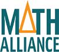

About
The Pennsylvania Math Alliance (PAMath) is a regional alliance in the mathematical sciences covering the all of Pennsylvania. Such a regional alliance concept has been built upon the successful National Math Alliance (National Alliance for Doctoral Studies in the Mathematical Sciences). The mentors in the alliance help to establish connections with other faculty across Pennsylvania who will work closely with PAMath toward the goals of the National Math Alliance:
